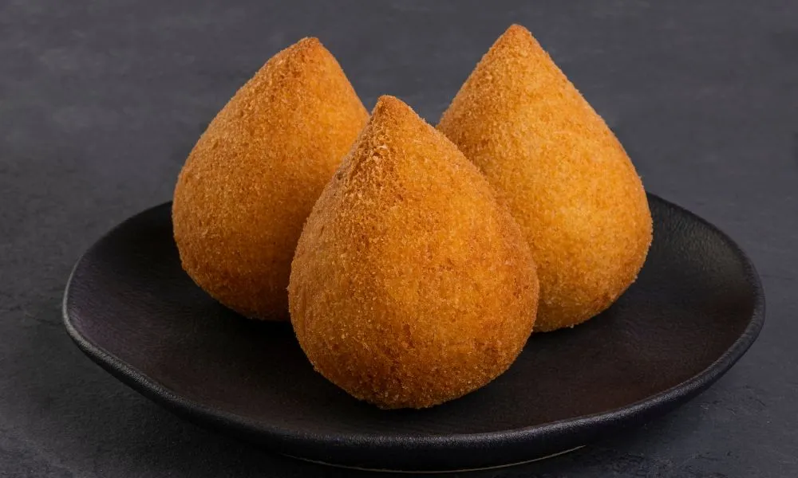

Homepage
Coxinha

Coxinha is a popular Brazilian snack made from shredded chicken filling encased in a soft, savory dough, shaped like a teardrop or drumstick, then breaded and deep-fried until golden and crispy. The name "coxinha" means "little thigh," as its shape resembles a chicken drumstick. It is commonly served as a street food or party appetizer throughout Brazil.
- Chicken Breast: 500g
- Onion: 1 small, chopped
- Garlic: 2 cloves, minced
- Cream Cheese: 2 tbsp
- Chicken Broth: 2 cups (480ml)
- All-Purpose Flour: 2 cups (240g)
- Butter: 2 tbsp (28g)
- Salt: To taste
- Eggs: 2
- Breadcumbs: 1 cup (120g)
- Vegetable Oil: For deep frying
- Boil chicken breast in salted water; shred and set aside. Reserve broth.
- Sauté onion and garlic, add shredded chicken and cream cheese (if using). Mix well.
- In a saucepan, bring chicken broth and butter to a boil. Add flour, stirring until smooth and thick. Cool slightly.
- Flatten dough, fill with chicken, shape into teardrops.
- Dip in beaten eggs, coat with breadcrumbs.
- Deep-fry until golden. Drain on paper towels.